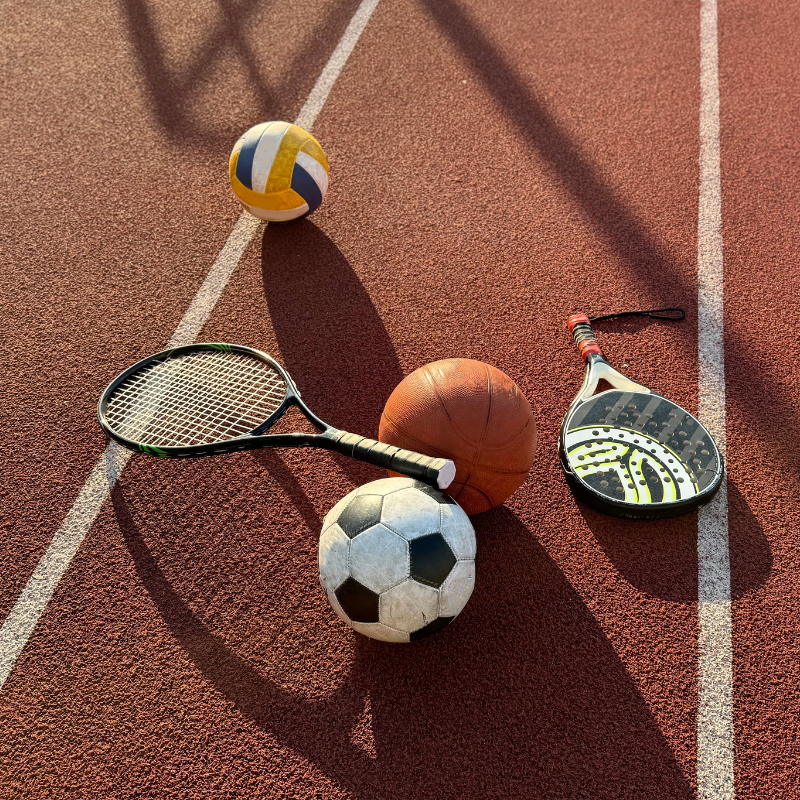
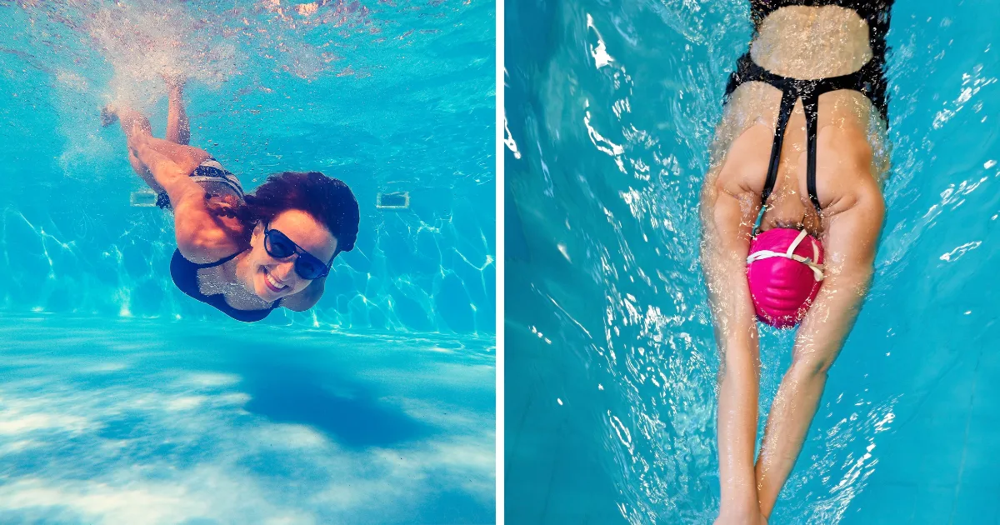
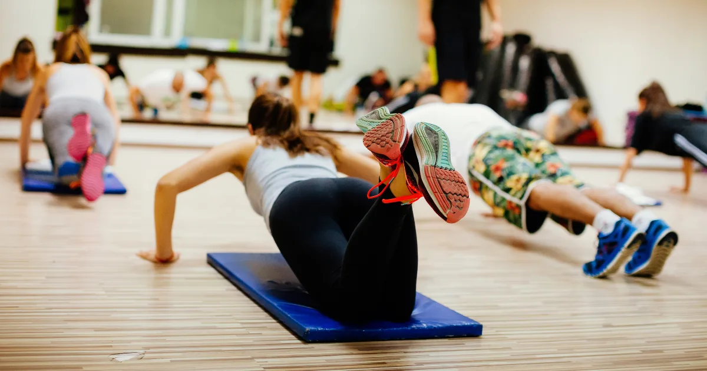

Nejlepší sporty na hubnutí: který si vybrat?
Chcete zhubnout a hledáte sport, který vám to usnadní? Dobrá zpráva: funguje jich víc, než si myslíte. Špatná zpráva: neexistuje jeden „nejlepší" sport pro všechny. Záleží na vaší kondici, preferencích, zdravotním stavu a hlavně na tom, co vás baví – protože nejúčinnější sport je ten, u kterého vydržíte.
V tomto přehledu srovnáme nejoblíbenější sporty z hlediska spalování kalorií, vhodnosti pro začátečníky a účinku na hubnutí. Od plavání přes švihadlo až po hula hoop.

Srovnání sportů: kolik spálíte za hodinu
Následující tabulka ukazuje orientační spalování kalorií pro osobu o hmotnosti 70–80 kg. Skutečné hodnoty se liší podle intenzity, kondice a dalších faktorů.
| Sport | Spalování (kcal/h) | Nárazovost | Vhodné pro začátečníky |
|---|---|---|---|
| Běh (8 km/h) | 500–700 | Vysoká | Středně |
| Plavání | 400–700 | Nulová | Ano |
| Švihadlo | 600–900 | Střední | Středně |
| Jízda na kole | 400–600 | Nulová | Ano |
| HIIT | 500–800 | Vysoká | Ne |
| Pilates | 200–400 | Nulová | Ano |
| Hula hoop | 300–500 | Nulová | Ano |
| Chůze (rychlá) | 300–450 | Minimální | Ano |
| Silový trénink | 300–500 | Nízká | Ano (s vedením) |
| Tanec (intenzivní) | 400–600 | Střední | Ano |
* Hodnoty jsou orientační pro osobu 70–80 kg. Při vyšší hmotnosti spalujete více.

Plavání a hubnutí
Plavání je jedním z nejkomplexnějších sportů – zapojuje všechny hlavní svalové skupiny, je šetrné ke kloubům a díky odporu vody je trénink intenzivní i při nižší rychlosti. Proto je ideální volbou pro lidi s nadváhou, problémy s klouby nebo pro starší sportovce.
Proč plavání funguje
- Nulový náraz – voda nese vaši hmotnost, klouby nejsou zatěžovány
- Celotělový trénink – posiluje ruce, nohy, záda i břicho současně
- Vysoký kalorický výdej – intenzivní plavání spálí 500–700 kcal za hodinu
- Kardiovaskulární benefity – posiluje srdce a plíce
Tip pro začátečníky
Pokud neumíte dobře plavat, začněte s aqua aerobikem nebo plaveckou školou pro dospělé. I chůze v bazénu proti proudu je účinným tréninkem.

Švihadlo a hubnutí
Švihadlo je nenápadný, ale extrémně účinný nástroj na hubnutí. Skákání přes švihadlo patří k aktivitám s nejvyšším spalováním kalorií – 10 minut skákání odpovídá přibližně 30 minutám běhu. A stojí pár stovek.
Výhody švihadla
- Nejvyšší spalování z běžně dostupných aktivit (600–900 kcal/h)
- Levné a přenosné – cvičíte kdekoliv
- Zlepšuje koordinaci a rovnováhu
- Posiluje lýtka, stehna, ramena a střed těla
Jak začít
- Pořiďte si švihadlo správné délky (když stojíte na středu, rukojeti sahají do podpaží)
- Začněte intervaly: 30 sekund skákání / 30 sekund pauza × 10 opakování
- Postupně prodlužujte intervaly a zkracujte pauzy
- Po 2–3 týdnech zvládnete 10–15 minut nepřetržitě
Pozor: švihadlo není vhodné pro lidi s výraznými problémy s koleny nebo značnou nadváhou (BMI nad 35). V takovém případě je lepší začít s chůzí nebo plaváním.
Pilates a hubnutí
Pilates není typický „spalovací" sport – za hodinu spálíte méně než při běhu nebo plavání. Proč ho tedy zařazujeme? Protože pilates buduje svalovou hmotu, zlepšuje držení těla a posiluje hluboký stabilizační systém. A více svalů = vyšší bazální metabolismus = více spálených kalorií i v klidu.
Pilates cviky na hubnutí
- The Hundred – klasický pilates cvik na břicho, který zvedne tepovou frekvenci
- Plank variace – posilují celý střed těla
- Leg Circles – zpevňují nohy a boky
- Swimming – posiluje záda a hýždě
- Roll Up – alternativa k sed-lehům, šetrnější k páteři
Pro koho je pilates ideální
- Začátečníky, kteří se bojí náročného cvičení
- Lidi po zranění nebo s problémy se zády
- Maminky po porodu (více o hubnutí po porodu)
- Kohokoliv, kdo chce kombinovat pilates s kardio tréninkem
Hula hoop a hubnutí
Hula hoop zažívá v posledních letech comeback – a oprávněně. Točení obručí kolem pasu je zábavné, dá se dělat doma u televize a spaluje překvapivě dost kalorií.
Co ukazují studie
Výzkum publikovaný v Journal of Strength and Conditioning Research ukázal, že 30 minut hula hoop cvičení spálí přibližně 200–300 kcal a výrazně posiluje svaly středu těla. Při pravidelném cvičení (4–6× týdně) lze očekávat zmenšení obvodu pasu o 3–4 cm za 6 týdnů.
Jak na to
- Zvolte těžší obruč (1–2 kg) – snáze se s ní točí a je účinnější
- Začněte s 5–10 minutami a postupně prodlužujte na 20–30 minut
- Střídejte směr otáčení, abyste posilovali rovnoměrně
- Kombinujte s dalšími cviky – dřepy, výpady, chůze
Jak vybrat správný sport
Nejdůležitější kritérium při výběru sportu na hubnutí není spalování kalorií – je to udržitelnost. Sport, který vás baví, budete dělat pravidelně. Sport, který nenávidíte, vzdáte po 3 týdnech, i kdyby spaloval nejvíc.
Přehled podle situace
| Vaše situace | Doporučené sporty |
|---|---|
| Začátečník s nadváhou | Chůze, plavání, jízda na kole |
| Problémy s klouby | Plavání, jízda na kole, pilates |
| Málo času | Švihadlo, HIIT, silový trénink |
| Cvičení doma | Švihadlo, hula hoop, pilates, silový trénink |
| Po porodu | Chůze, pilates, plavání |
| Po 50 letech | Chůze, plavání, silový trénink, jóga |
Ideální kombinace
Pro nejlepší výsledky kombinujte:
- 2–3× kardio (běh, plavání, kolo, švihadlo) – pro spalování kalorií
- 2× silový trénink – pro udržení svalů a zrychlení metabolismu
- Denní chůze – jako základ pohybového režimu
Ke správnému spalování pomáhá i znalost optimální tepové frekvence. A nezapomeňte, že hubnutí je z 80 % o stravě – sport je důležitý doplněk, ne náhrada za správný kalorický příjem.